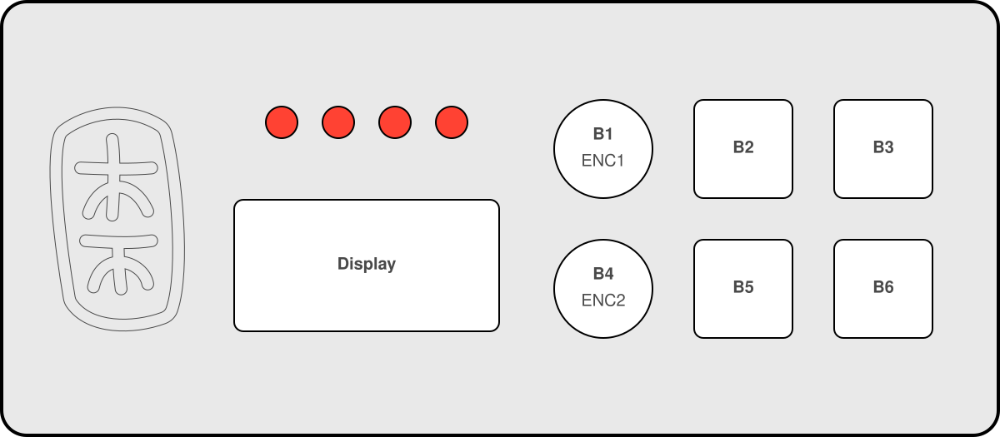

The device has a display, two encoders (ENC1, ENC2), six buttons (B1 to B6) and four LEDs that show the four outputs, called slots A, B, C and D. B1 and B4 are the push switches of ENC1 and ENC2; the other four are the keys.

Overview
This is the page shown after power-on. The clock starts at 120 BPM.
| ENC1 | Tempo, 20 to 300 BPM | |
|---|---|---|
| ENC2 | Global speed: /4, /2, x1, x2, x4 | |
| B1 | Open the tempo page | |
| B2, B3, B5, B6 | Edit slot A, B, C, D | |
| B4 | Set global speed back to x1 |
Tempo page
| ENC1 | Tempo, 20 to 300 BPM | |
|---|---|---|
| B3 | Tap tempo. Tap at least four times, less than two seconds apart | |
| B4 | Set tempo back to 120 BPM | |
| B5 | Pause | |
| B6 | Resume when paused, restart the bar when playing | |
| B2 | Back to Overview |
Editing a slot
Each slot has three pages. B6 moves to the next page (Wave, Range, Noise, then Wave again) and B2 goes back to Overview.
Wave
| ENC1 | Waveform: SIN, TRI, SQU, SAW, CON (constant), NOI (noise) | |
|---|---|---|
| ENC2 | Cycle length: /8, /4, /2 (8, 4, 2 bars), x1 (1 bar), x2 (2 beats), x4 (1 beat) | |
| B3 | Set waveform and cycle length back to SAW and x1 | |
| B5 | Apply. Changes on this page take effect only when you press B5 |
Range
| ENC1 | Minimum output value | |
|---|---|---|
| ENC2 | Maximum output value | |
| B3 | Set the range back to full | |
| B5 | Smoothing on or off |
Noise
Affects the NOI waveform only.
| ENC1 | Frequency, 1 to 16 humps per cycle | |
|---|---|---|
| ENC2 | Seed, which selects a different noise pattern | |
| B3 | Set frequency and seed back to their defaults |
Changes on the Range and Noise pages take effect immediately. The noise pattern repeats exactly every cycle, so it stays in sync with the clock. Settings are not saved; the device starts with its defaults each time it is powered on.